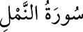

<a name=5954></a><br/>
<b>27- NEML SÛRESİ</b><br/>
<i><b>Mekke’de nâzil olmuştur.<br/>93 âyettir. «Neml» karınca demektir.<br/>Süleyman (a.s.)’ın ordusuna yol veren karıncalardan söz edildiği için sûre bu</b></i><br/>
<i><b>ismi almıştır.</b></i><br/>
